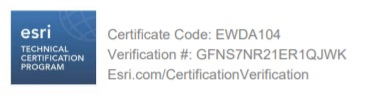

CV
Monica Mohan¶
Monica Mohan
City: Singapore
email: monicamons12@gmail.com
GitHub: https://github.com/gisbymonica
GitHub Page: https://gisbymonica.github.io
LinkedIn Profile: https://www.linkedin.com/in/monicamohan/
ArcGIS Online: https://monicamohan.maps.arcgis.com/
Medium: https://medium.com/monicamohangis/
Last updated: June 2022
Profile¶
Certified GIS developer - with 4 years of professional experience in geospatial technologies and 4 years of hands-on education in Geoinformatics. Versatile and well-versed in open source and ESRI GIS technologies. Highly enterprising individual who drives the team forward to deliver solutions to location-centric business problems. Passionate about employing Machine Learning techniques and Artificial Intelligence in GIS.
Technical Skills¶
| Domain | Technology |
|---|---|
| Geospatial Technologies - ESRI | ESRI JS API – 3.x and 4.x, ArcGIS Online/ Portal, ArcMap 10.x, ArcGIS Server 10.x, ArcGIS Runtime API for .NET 100.x, ArcPy, ArcGIS Pro 2.x, ESRI WebAppBuilder |
| Geospatial Technologies - Open Source | OpenLayers, LeafletJS, GeoServer, Geocortex, Google Maps API,Pix4D API, PostGIS, QGIS |
| Languages | JavaScript – React, C#, Python, R |
| Web and Cloud Technologies | HTML, CSS, SASS, NodeJS, jQuery, Web Services (REST, SOAP), ASP.NET MVC, WPF, Google Firebase, Amazon S3 SDK for JavaScript, AWS cloud technologies, mocha, Cypress, Puppeteer, Selenium |
| Data Modelling and Management | PostgreSQL, Microsoft SQL Server, Oracle DB, ArcGIS EDBs |
| DevOps | Jenkins CI/CD Pipeline, Groovy Script |
| Version Control | Git |
Certification¶

Experience¶
NCS Singapore¶
GIS CONSULTANT | NOVEMBER 2021 - PRESENT
- Architected and implemented a cloud-based open-source GIS ecosystem for various clients
- Implemented on-premises to cloud migration of ArcGIS Enterprise systems.
- Developed GIS-based web applications using ArcGIS JS API 4.x and ReactJS for few clients and Open Source GIS technologies for a few others.
- Initiated client interactions and supported pre-sales team with system and solution architectures for GIS systems.
Coforge Singapore (Client: URA)¶
GIS DEVELOPER | NOVEMBER 2020 - NOVEMBER 2021 | URBAN REDEVELOPMENT AUTHORITY
- Single-handedly optimized the CI/CD pipeline in Jenkins for GIS application.
- Introduced the team to Unit Test Engines in Phabricator-Arcanist and optimized Automated End-to-End testing.
- Developing the enhancement requests for the in-house GIS application.
Thatz International SG (Client: JTC)¶
GIS DEVELOPER | MARCH 2020 – NOVEMBER 2020 | JURONG TOWN CORPORATION
- Migrated the GIS modules of a Geocortex based application to ReactJS and ESRI JS API 4.x based application.
- Maintained and developed enhancements in Geocortex based in-house GIS application.
- Migrated APIs from VB.NET to ASP.NET and modified stored procedures in SQL Server.
- Documented User Acceptance Test Cases and performed UATs and rolled out the new functionalities and changes to production environment.
Hexamap Solutions India¶
GIS DEVELOPER | OCTOBER 2018 – FEBRUARY 2020
- Gathered requirements from the client and documented the Design specifications and functional specifications for GIS based project.
- Developed GIS based web reporting application for a defense sector client. Documented the test cases and introduced end-to-end testing frameworks to the team as a pilot project.
- Delegated tasks amongst team members for implementation of open-source GIS based project for a construction sector client and deployed the application in the client premises in the production environment.
- Responsible for setting up ArcGIS Server and EGDBs at client premises to connect with the GIS application developed.
- Individually developed and delivered GIS projects in short deadlines.
University of Angers France¶
GIS INTERN | MAY 2015 – JULY 2015
- Developed ArcGIS Python toolbox to calculate the areas that would be potentially inundated in case of flood in Toliara basin in Madagascar.
Education¶
College of Engineering Guindy¶
B.E. GEOINFORMATICS | 2012 - 2016
- Developed ArcPy script to calculate Landslide hazard risk using Machine Learning techniques.
- Built a GIS based Business Intelligence application that derive spatial insights to support business decisions using R and ArcGIS Runtime API for .NET.
- Developed a citizen portal and a Decision support system for smart city planning.